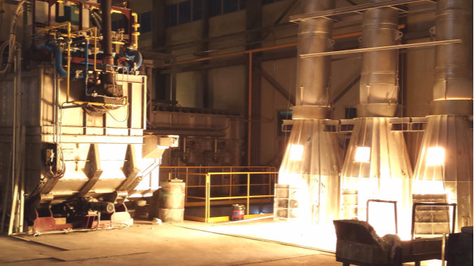

The Critical Role of Zinc Oxide in Rubber Manufacturing
Zinc oxide (ZnO), especially White Seal grade, is indispensable in rubber production. As a leading zinc oxide manufacturer, Pavansut Zinox supplies high-purity ZnO to rubber industries worldwide, enhancing vulcanization efficiency and product durability.
Why Zinc Oxide is Essential for Rubber

1. Vulcanization Accelerator
Zinc oxide acts as a catalyst in sulfur vulcanization, reducing curing time by up to 30% while improving cross-link density.
- Optimal dosage: 3-5 phr (parts per hundred rubber)
- Our 99% + pure White Seal ZnO ensures consistent results

2. Tensile Strength Enhancement
Pavansut Zinox's zinc oxide increases tensile strength by:
| Rubber Type | Strength Improvement |
|---|---|
| Natural Rubber (NR) | Up to 25% |
| Styrene-Butadiene (SBR) | Up to 18% |
Technical Insights
Our rubber-grade zinc oxide (CAS 1314-13-2) provides:
Optimal Particle Size
Best PSD for optimum dispersion
Low Impurities
Low impurites of Lead, Cadium and other heavy metals
Need custom specifications? Download our rubber-grade zinc oxide datasheet:
Download DatasheetCase Study: Thai Tyre Manufacturer
"After switching to Pavansut Zinox's White Seal zinc oxide, we achieved 15% faster vulcanization and reduced batch inconsistencies. The result was a 25% increase in product quality and a 10% reduction in production costs. Our customers are delighted with the improved performance and cost-effectiveness."- Production Manager, Bangkok